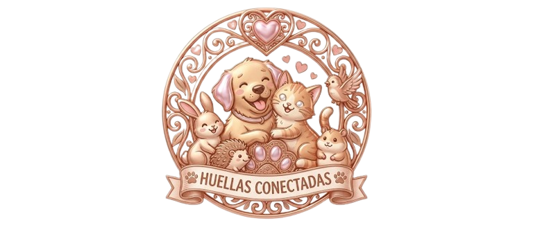

¡Tu mascota te está esperando!
Conectate con su familia y comenzá una historia de amor a cuatro patas.
Le notificaremos a su familia que alguien especial quiere conocer a la mascota.

Conectate con su familia y comenzá una historia de amor a cuatro patas.
Le notificaremos a su familia que alguien especial quiere conocer a la mascota.